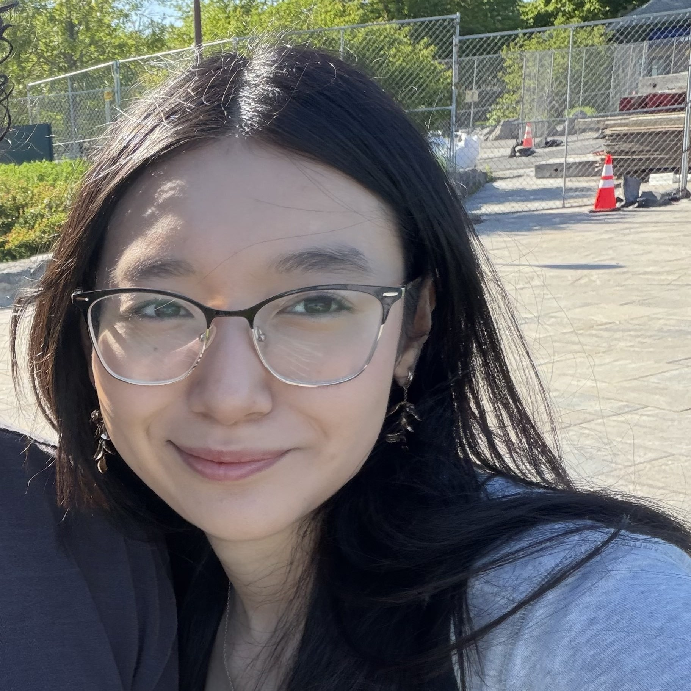

About Me
Hello! I'm Kailani!
I'm currently a student at Farmingdale State College pursuing a B.S. in Computer Programming & Information Systems. I have also completed an A.S. in Computer Science.
I'm interested in technical project management and UI/UX development, with a passion for turning ideas into thoughtful, well-executed products. I'm especially interested in using AI-powered workflows to improve efficiency while preserving human creativity and decision-making.
I'm currently seeking internship opportunities where I can gain hands-on experience, contribute to meaningful projects, and grow my technical, leadership, and collaboration skills.
In my free time I enjoying rock climbing, traveling, listening to music, and watching movies.
Thank you for taking the time to learn more about me!
